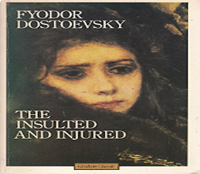

In this story the impulse toward self-abnegation in love, which appears so markedly in both Vanya & Natasha, isn't itself enough to direct their lives; instead, it combines with their social world & the mundane ambitions of Prince Valkovsky to defeat their hope of happiness. Of all the characters in the novel, only Natasha's lover, the Prince's son Alyosha-the person least driven to mold life to his own terms-emerges untouched.
 back